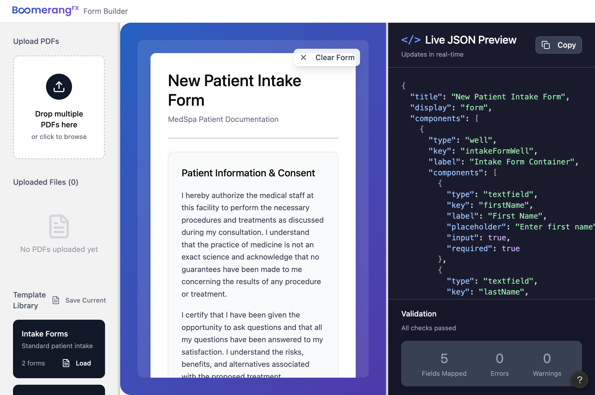
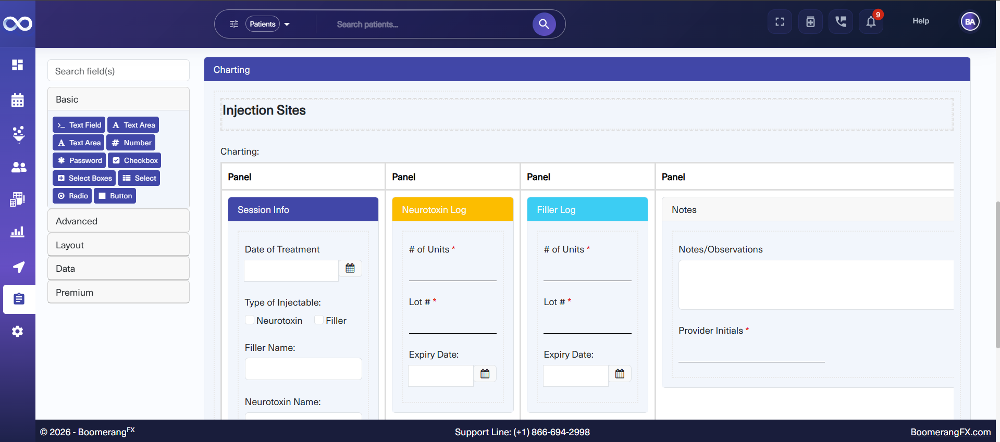
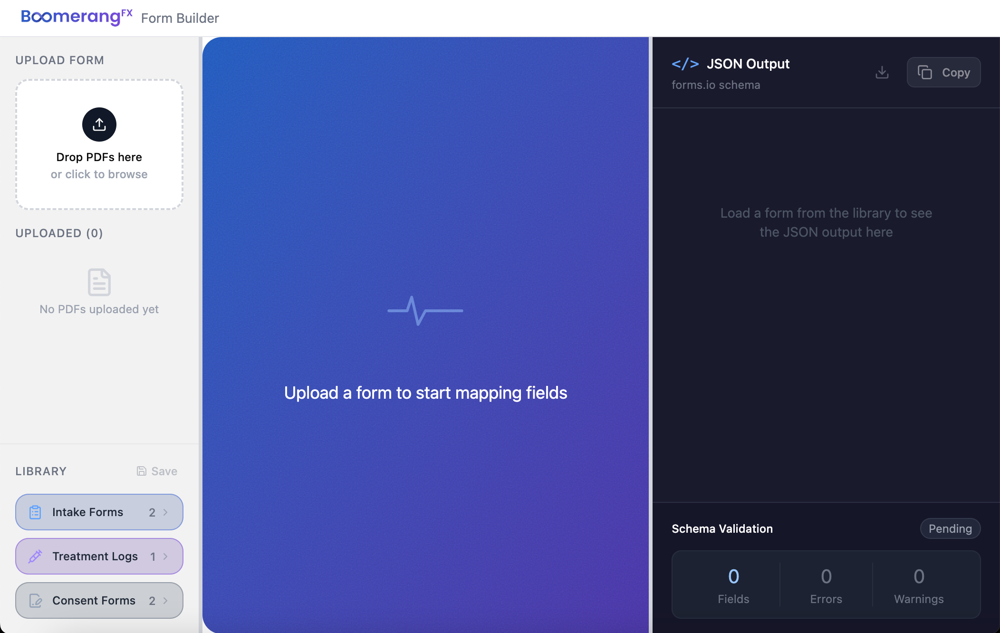
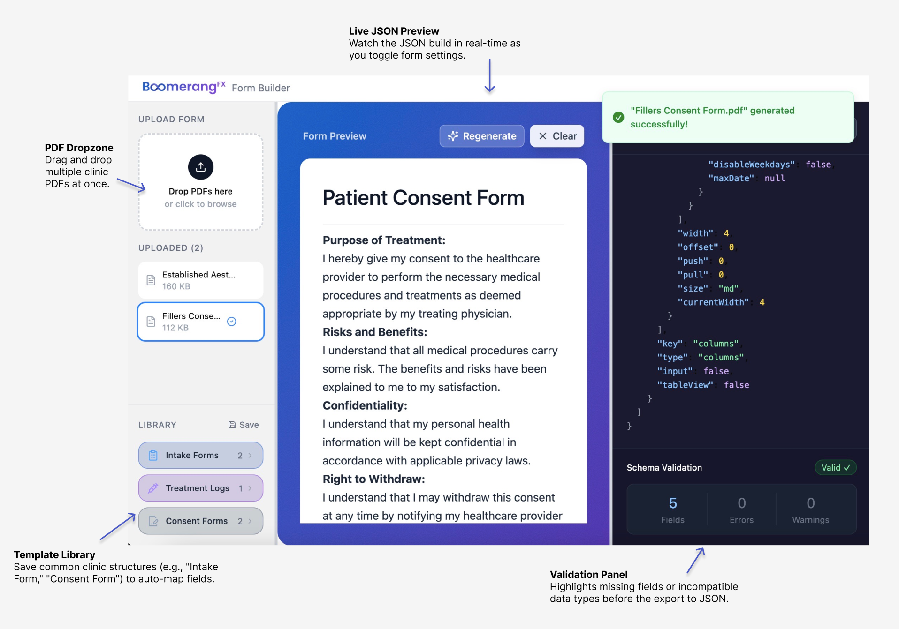
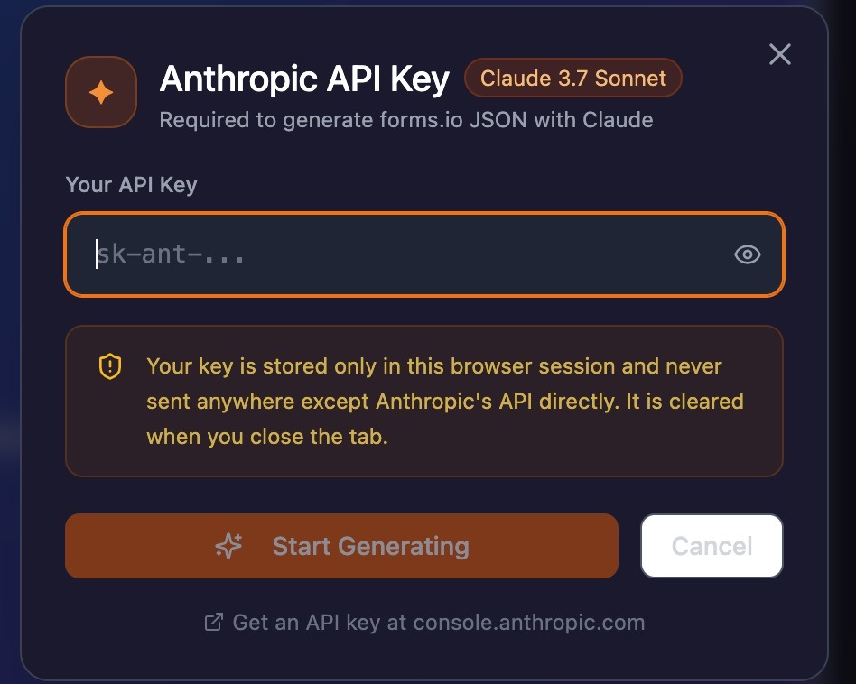
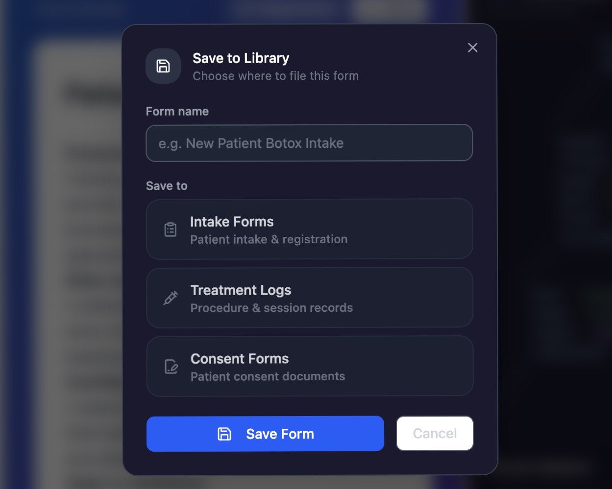
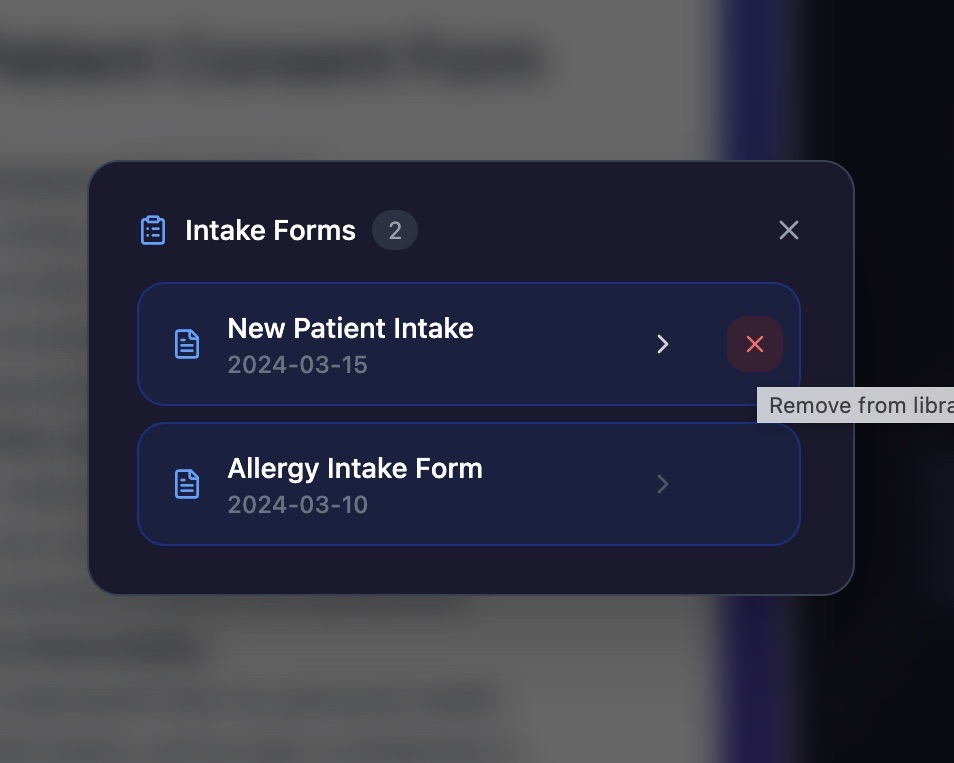
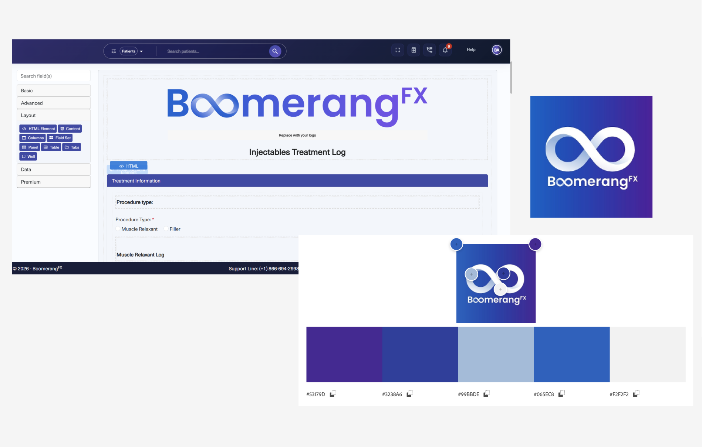

BoomerangFX · Internal Productivity Tool · March 2026
Note: The linked prototype demonstrates the UI and user flow. The full AI integration — PDF extraction, Claude API streaming, and live JSON generation — runs locally and requires an Anthropic API key.
I developed an AI-driven form migration dashboard that reduces clinic form onboarding time by 90% — combining Claude's language model with a custom-built React interface that lets implementation specialists audit every AI-generated field before export.

One of the many tasks of the Data Migration team at BoomerangFX is to transfer clinical forms from clients' old practice management software into BoomerangFX. It's a tedious process involving manually inputting every text field, checkbox, signature line, and consent paragraph inside BoomerangFX's forms.io builder — a form-rendering platform used across the patient management system.
Using ChatGPT to convert forms to JSON yielded ~okay~ results. Oftentimes, a lot of text and input fields were skipped, or it wouldn't handle forms more than 1 page long, leading to missing information. This could be very dangerous for surgical consent or pre- and post-procedure forms!
This process wasn't just inconvenient — it's a liability.

Current Tool
I identified the problem, designed the solution, and built it. Working within Figma Design for UI design, then Figma Make for the initial prototype, and extending the codebase in TypeScript — I owned the full product lifecycle: problem framing, UX design, AI integration, and deployment.
A three-panel web application that replaces the manual process entirely:
Drag and drop any client form. Accepts PDFs, Word documents (.docx), and scanned images (PNG/JPG/WEBP). Each file type is processed through a dedicated extraction pipeline.
A live form preview renders every field, checkbox, radio button, and signature line so the specialist can visually verify output before touching any JSON. This is the human-in-the-loop checkpoint that solves the AI hallucination problem.
The raw Form.io JSON streams in real-time as Claude generates it. Copy or download with one click.
Extraction Types
| File Type | Library | Method |
|---|---|---|
| pdfjs-dist | Full text extraction page by page | |
| Word (.docx) | mammoth | Raw text extraction from XML |
| Images (PNG/JPG) | FileReader API | Base64 DataURL → Claude Vision |



Anthropic Key Prompt — Your key is stored only in the browser session and never sent anywhere except Anthropic's API directly. Cleared when you close the tab.

Save to Library — File common clinic structures (e.g. "Intake Form," "Consent Form") to auto-map fields on future uploads.

Template Library — Manage saved forms by category. Remove outdated templates with a single click.
Design brainstormed and prototyped in Figma Design before extending the codebase — covering branding, colour palette, component layouts, and the three-panel architecture.

Design brainstorm on Figma Design
| Criteria | ChatGPT (GPT-4o) | Claude Sonnet |
|---|---|---|
| Forms longer than 1 page | Truncates | Handles fully (8+ pages) |
| Medical text accuracy | Paraphrases | Reproduces verbatim |
| Scanned image forms | Limited | Native vision support |
| Cost per generation | ~$0.08 | ~$0.10 |
For legal consent forms, paraphrasing is not acceptable. Claude was the only model that passed the accuracy test on real client documents.
| Metric | Result |
|---|---|
| Migration time reduction | 90% |
| Maximum form length handled | 8 pages |
| File types supported | PDF, Word, PNG, JPG |
| Form.io component types auto-detected | 12 |
| Schema accuracy (human-verified) | 100% |
The system Node binary was compiled for macOS 13.5 (Ventura) but running on an older OS version, causing a C++ standard library crash on every npm command.
Fix: Installed nvm (Node Version Manager) to manage Node versions independently of the system:
Figma Make's generated prototype rendered a hardcoded form card regardless of what file was uploaded.
Fix: Rewired the entire data flow in App.tsx to call the Claude API on file selection, stream the response live into the right panel, and feed the parsed JSON into a custom recursive Form.io renderer.
PDFs, Word docs, and images each require a completely different extraction strategy. Built a unified fileExtraction.ts utility that routes each file type to the correct library and returns a consistent result object.
This project sits at the intersection of where I want to work: meaningful work and a UI that brings a solution to life.
I'm happy to have improved work processes of the data migration team so early at my tenure at BoomerangFX, and I look forward to using my skills in design and engineering to create even better experiences.